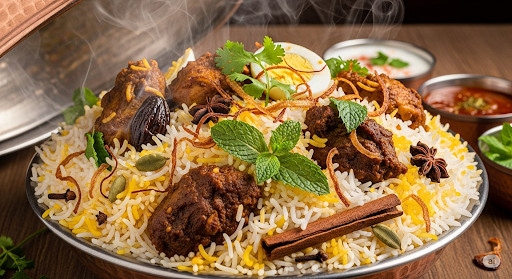

Home
Chicken Biryani

Description
Hyderabad biryani is a world-famous Indian rice dish. Known for its aromatic basmati rice, richly spiced marinated meat.
This layered "dum" style biryani is slow-cooked to perfection, allowing the flavours to infuse deeply.
Ingredients
Marinade
- 5 black peppercorns
- 3 whole cloves
- 2.5 cardamom pods
- 1 cinnamon stick
- 1 star anise pod
- cumin seeds
- fresh mint and coriander leaves
- 0.5 cup plain yogurt
- 1 teaspoon lemon juice
- 1 tablespoon ginger-garlic paste
- 1 teaspoon chili powder
- 1 teaspoon turmeric powder
- 1/2 kg chicken thighs
Biryani
- 1.75 cups water
- 1 cup basmati rice
- 2 bay leaves
- 0.25 cup warm milk
- pinch of saffron threads
- 2 tablespoon ghee
- 1 large onion, thinly sliced
- 1 green chile, chopped
Steps
- Place black peppercorns, cloves, cardamom, cinnamon sticks, star anise, and cumin seeds into a spice grinder; grind them to a fine powder.
- Place coriander and mint leaves in the bowl of a food processor; pulse until coarsely chopped.
- Combine spice powder, coriander-mint mixture, yogurt, lemon juice, ginger-garlic paste, chili powder, biryani masala powder, and turmeric in a large glass or bowl.
Add chicken; toss to evenly coat. Cover bowl with plastic wrap and marinate in the refrigerator
- Bring water and rice to a boil in a saucepan; add 2 bay leaves. Reduce heat to medium-low, cover, and simmer until rice is partially cooked through and still firm, about 5 minutes. Drain; set aside.
- Combine milk and saffron in a small bowl; stir and set aside.
- Heat ghee in a large pot with a tight-fitting lid over medium-high heat.
Add onions;cook and stir until golden brown, about 15 minutes. Drain on paper towels; set aside.
- Reduce heat to low. Add remaining 2 bay leaves and chile peppers; cook and stir until fragrant, 1 to 2 minutes. Carefully transfer 1 tablespoon ghee from teh pot to a small bowl; set aside.
- Remove chicken from marinade, wiping excess marinade off; add chicken to the pot. Discard remaining marinade.
cok over medium heat until no longer pink, about 2 minutes per side; spread rice on top, then sprinkle on onions. Drizzle reserved ghee and saffron milk over rice and onions.
- Cover the pot; cook over high heat, about 8 minutes. Reduce heat to low; continue cooking, about 5 minutes.
Remove from heat; let stand, covered, until rice is tender and an instant-red thermometer inserted into the thickest part of chicken reads 74 degree C, about 15 minutes more.